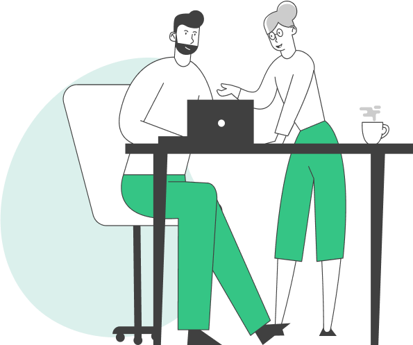

인사잇(insa-IT)?
인사잇은 조직 문화에 맞는 인사관리를 가능하게 하며, 반복적인 업무를 최소화해 드립니다.
그렇다면, 인사 담당자 는무엇에 집중해야 할까요?
번거롭고 피로감 높은 반복 업무는 줄이고, PO(People Operations)에 집중하세요. 조직
만족도를 높이고, 직원 경험을 최적화하여 구성원과 조직의 성장에 몰두할 수 있도록 인사잇이
함께합니다.

인사기본
효율적인
인사관리의 시작
인사관리의 시작
보상관리
신뢰받는 보상,
탄탄한 조직
탄탄한 조직
성과평가
조직과 개인의
성과를 극대화
성과를 극대화
채용
최적의 인재 채용,
기업 성장의 시작
기업 성장의 시작
인재육성
구성원 육성을 위한
맞춤 교육
맞춤 교육